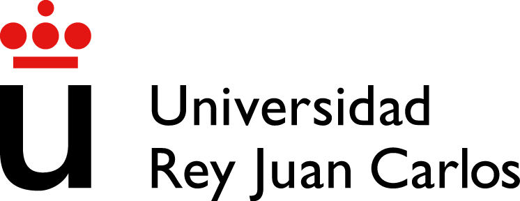

Nombre: Jonathan Cano Picazo
Domicilio: C/Villalba 9 3C (Fuenlabrada, Madrid)
DNI: 49147015V
Teléfono: 677010914
E-mail: canopicazojonathan@gmail.com
Nacimiento: 16 de Noviembre de 1994 (23 años)
Carnet: Tipo B. Vehículo propio
FORMACIÓN ACADÉMICA
- Título de Bachillerato (IES Salvador Allende).
- Grado en Tecnologías de Telecomunicación (Universidad Rey Juan Carlos). Cursando 4º año.
FORMACIÓN COMPLEMENTARIA
- Cursos de ofimática, mecanografía y diseño de páginas web: Excel, Access, Power Point, PhotoShop, Adobe Premiere.
- Manejo de sistemas operativos: Windows, Linux, Mac OS, Android, iOS.
- Manejo de diversos lenguajes: C, Java, JSon, Python, Matlab, CSS, XML.
IDIOMAS
- Castellano: Nativo (hablado/escrito)
- Inglés: B2 (nivel alto hablado y escrito). Título TOEIC
EXPERIENCIA LABORAL
- 2018: Icono Telecom SL: planificación e instalación de fibra óptica y HFC.
- 2017: Cellnex Telecom (Retevisión I SA): Zona técnica y comercial.
- 2016-2017: Vendedor, reponedor y consultor en Alcampo SA (zona de informática, audio e imagen).
- 2015-2016: Cajero/reponedor en Carrefour SA.